CS61B 第 5 讲：SLList、嵌套类与哨兵节点（SLLists, Nested Classes, Sentinel Nodes）
本电子书信息 - 来源视频：【数据结构与算法 CS61B 2021】伯克利大学—中英字幕 p04 5_SLLists, Nested Classes, Sentinel Nodes - 课程讲义：Hug61B · 2.2 The SLList - 讲义版权：本课程全部材料由 Josh Hug（UC Berkeley CS61B）以 Creative Commons 4.0 BY-NC-SA 许可发布——可自由分享、演绎，但须署名 Josh Hug、以相同许可共享，且不得商用。 - 本书由课堂录像字幕重构而成，术语以官方讲义为准；文中示意图为官方讲义原图，演示过程图截取自视频。
上一讲我们构建了 IntList，它在技术上能做列表能做的一切，但用起来别扭、代码难读难维护。究其原因，IntList 是一个裸递归数据结构（naked recursive data structure）：使用者必须深刻理解引用与递归，哪怕只是完成最简单的列表操作。本讲我们要给它"穿上衣服"，逐步把它改造成更接近现代语言中列表实现的新类 SLList。
一、改进一：重塑品牌（Rebranding）
IntList 的问题在于：它的递归结构"裸露"在外，谁都能直接摸到。在 Java 文化里，暴露裸递归结构是很奇怪的（在 Scheme 这类函数式语言里则司空见惯，但 Java 新手会被这种写法吓到）。
第一步看起来毫无进展：把上一讲的 IntList 重命名并删掉所有辅助方法，得到 IntNode：
public class IntNode {
public int item;
public IntNode next;
public IntNode(int i, IntNode n) {
item = i;
next = n;
}
}
first→item，rest→next；- 删除
size、get等方法，只留下最纯粹的"一个整数 + 一个指向下一个节点的指针"。
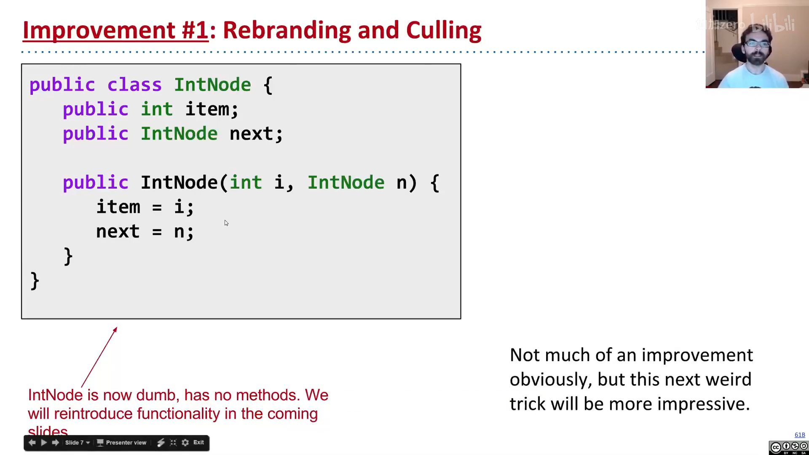
📷 重塑品牌：IntList 变 IntNode
回到原视频 (00:01:44)
这一步没有带来任何功能改进，但它把"数据载体（节点）"和"用户交互界面"的概念区分开了——这是后续一切改进的基础。
二、改进二：官僚体制（Bureaucracy）
IntNode 用起来很难。于是我们再建一个独立的类 SLList，让用户只与它打交道：
public class SLList {
public IntNode first;
public SLList(int x) {
first = new IntNode(x, null);
}
}
对比创建"单元素列表"的两种写法：
IntList L1 = new IntList(5, null); // 裸递归：必须手动填 null
SLList L2 = new SLList(5); // 有包装：null 细节被隐藏
SLList 把"存在一个 null 链接"这一细节藏了起来。它本质上是一个中间人（middleman）：用户不直接接触裸递归结构，而是通过 SLList 提供的方法来操作。
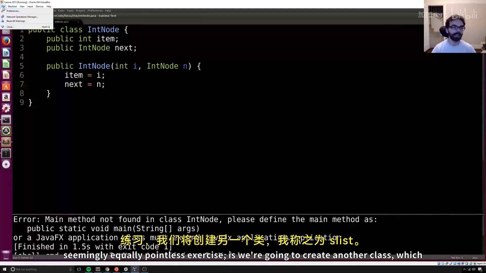
📷 SLList 作为中间人
回到原视频 (00:03:20)
addFirst 与 getFirst
加上两个热身方法：
public void addFirst(int x) {
first = new IntNode(x, first); // 头部插入：新节点指到旧 first
}
public int getFirst() {
return first.item;
}
用法对比：
SLList L = new SLList(15);
L.addFirst(10);
L.addFirst(5);
int x = L.getFirst(); // 5
而裸递归的 IntList 等价写法是：
IntList L = new IntList(15, null);
L = new IntList(10, L);
L = new IntList(5, L);
int x = L.first; // 需要直接摸 first，且必须理解"反向构建"
两者对比（上为 IntList，下为 SLList）：
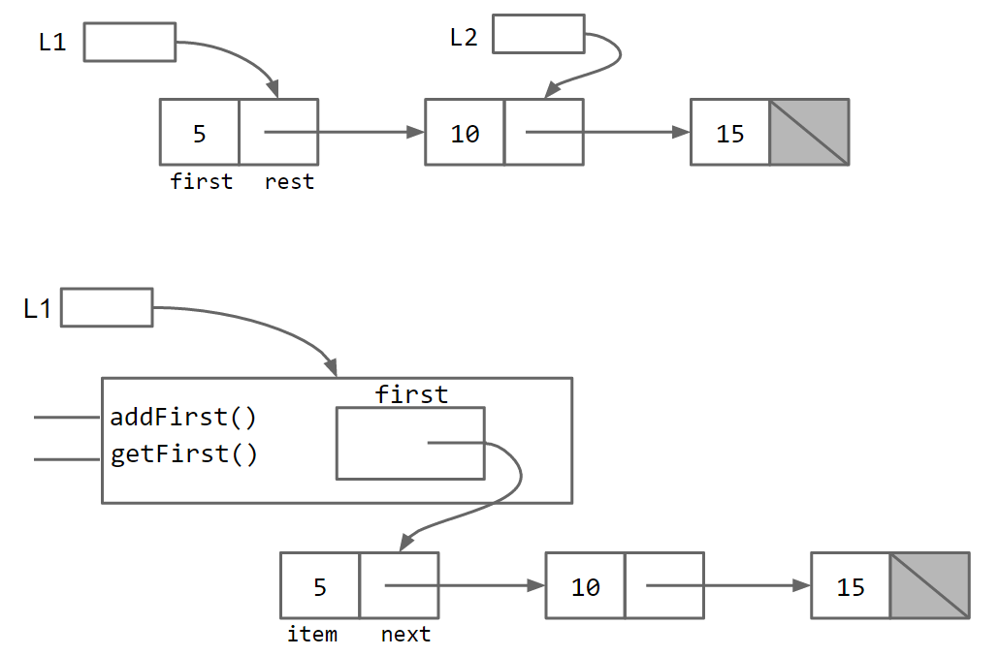
SLList 让代码读起来像普通 Java 惯例，新手也更容易上手。正如 Ovid 的典故所暗示的——"凡人不能直视神明而不死"，裸递归结构还是让 SLList 这个中间人来代为沟通为好。
三、改进三：公有与私有（Public vs. Private）
尽管有了 SLList，用户技术上仍能绕过它直接篡改内部结构。例如：
SLList L = new SLList(15);
L.addFirst(10);
L.first.next.next = L.first.next; // 直接摸裸结构，制造环
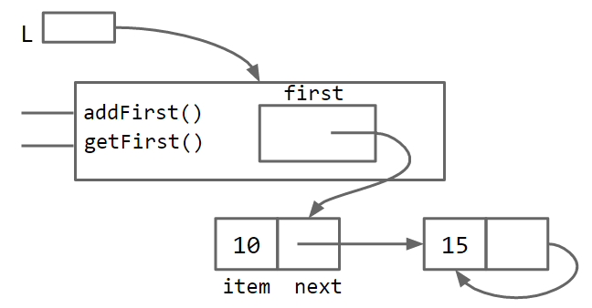
这会得到一个带无限循环的畸形列表。解决方法是把 first 声明为 private：
public class SLList {
private IntNode first;
...
}
private 成员只能被同一个 .java 文件里的代码访问。外部类（如 SLLTroubleMaker）再想摸 first，编译时就会报 first has private access in SLList。
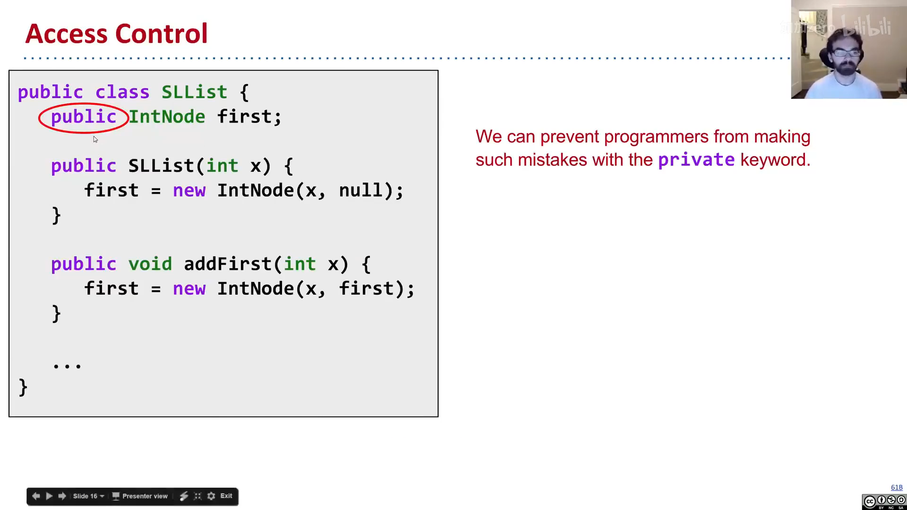
📷 private 关键字
回到原视频 (00:12:03)
为什么要限制访问？ 核心是隐藏实现细节：用户不需要知道有个 first 变量，更不该去动它——列表对用户来说应该是一个"神奇黑匣子"。
类比汽车：车有 public 的部分（油门、刹车、方向盘），车盖底下是 private 的细节（燃油喷射系统 / 电池电机）。不同车的私有细节千差万别，但所有油门踏板的对外行为都应一致；私有细节随你怎么改，用户都不会察觉。
金句：当你把一个成员设为
public，你实际上在向全世界承诺——它的行为将永远保持现在这样。所以private意味着"可以随意改、没人依赖它"，public意味着"一经发布、永久负责"。
四、改进四：嵌套类（Nested Classes）
IntNode 其实只是 SLList 故事里的"配角"，不该单独占一个 .java 文件。Java 允许把类声明嵌进另一个类里：
public class SLList {
public class IntNode {
public int item;
public IntNode next;
public IntNode(int i, IntNode n) {
item = i;
next = n;
}
}
private IntNode first;
...
}
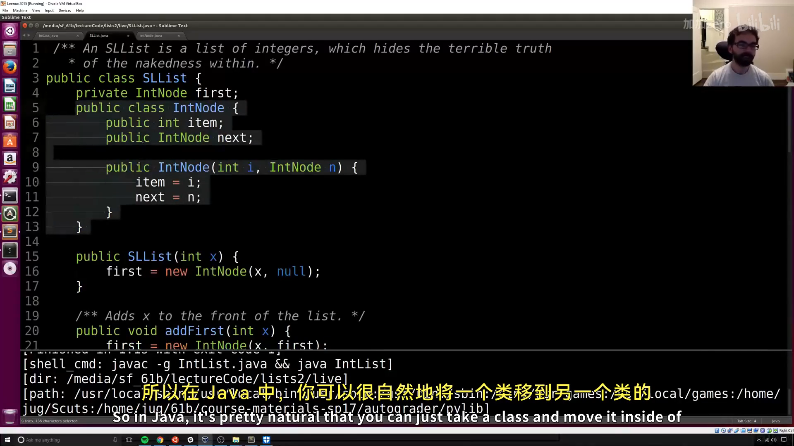
📷 嵌套类
回到原视频 (00:16:20)
嵌套类不影响性能，只是让代码组织更清晰（详见 Oracle 嵌套类文档）。
如果嵌套类不使用外部类的任何实例成员，就把它声明为 static：
public static class IntNode { ... }
static 嵌套类无法访问外部类的 first、addFirst 等成员。好处是节省一点内存——每个 IntNode 不再需要持有"如何访问它的老板 SLList"的引用。经验法则：如果嵌套类不用外部类的实例成员，就把它设为 static。
五、addLast 与 size
为给后续改进提供动力，我们给 SLList 加上 addLast（加尾部）和 size（求大小）。
addLast：迭代版
用指针变量 p 一路走到链表末尾：
public void addLast(int x) {
IntNode p = first;
while (p.next != null) {
p = p.next; // 前进到末尾
}
p.next = new IntNode(x, null);
}
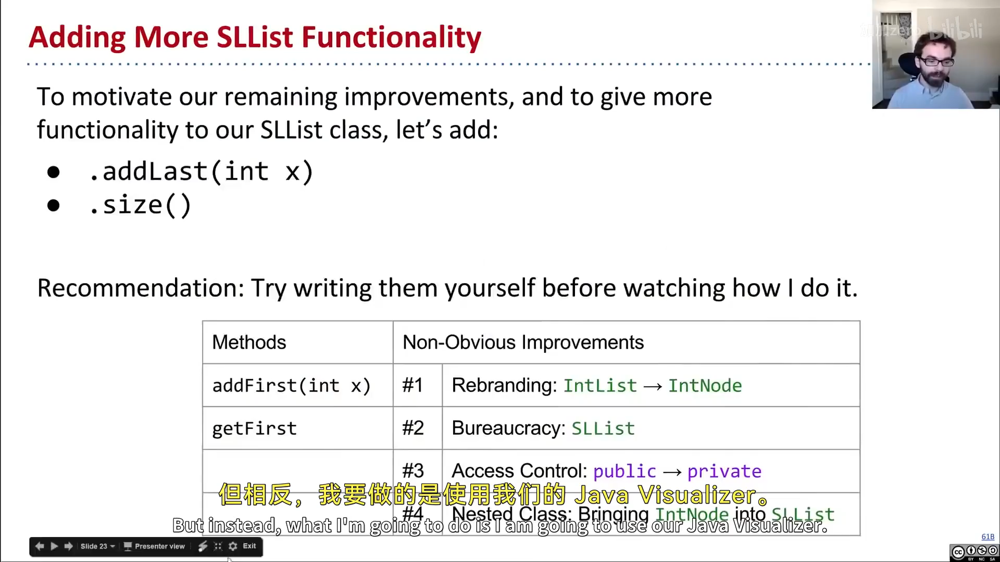
📷 addLast 的可视化
回到原视频 (00:22:46)
size：递归版（"凡人的语言"与"神的语言"）
上一讲 IntList.size() 是 return 1 + this.rest.size()，因为 IntList 有 rest。但 SLList 没有 rest 变量——SLList 本身不是递归的。于是我们采用一个常见模式：写一个 private static 辅助方法，去"和底层裸递归结构对话"：
/** 返回从 IntNode p 开始的列表大小 */
private static int size(IntNode p) {
if (p.next == null) {
return 1;
}
return 1 + size(p.next);
}
public int size() {
return size(first);
}
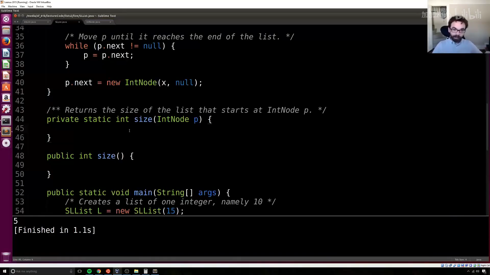
📷 递归 size 的私有辅助方法
回到原视频 (00:25:40)
两个方法同名 size 但参数不同，这叫做重载（overload）。Josh 把这对方法称作：public 方法用"凡人的语言"说话，private 辅助方法用"神的语言"说话——这是处理"中间人类 + 裸递归底层"的经典套路，后续会反复出现。
六、改进五：缓存（Caching）
上面的 size 是线性时间：列表有 100 万个元素，就要走 100 万步。假设 size 处理 1000 个元素要 2 秒，那处理 100 万元素就要 2000 秒——不可接受。
解法是缓存大小：在 SLList 里加一个 size 变量，每次增删时顺手更新：
public class SLList {
private IntNode first;
private int size;
public SLList(int x) {
first = new IntNode(x, null);
size = 1;
}
public void addFirst(int x) {
first = new IntNode(x, first);
size += 1;
}
public int size() {
return size; // 无论列表多大，O(1)
}
}
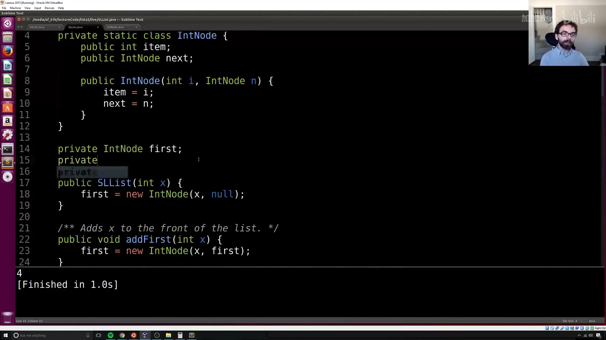
📷 缓存 size 变量
回到原视频 (00:28:44)
编者说明：缓存（caching）= 把重要数据"放到一边"以加速后续检索。这不是免费的（
addFirst/addLast要额外size += 1，还要多占一点内存），但代价微不足道，绝大多数情况下都是净收益。
这里还揭示出 SLList（中间人）的另一个天然优势：它可以顺手存储整个列表的元数据（size、max、min……）。裸递归结构做不到这么自然——你没法在链表上挂一个"全局"变量。
七、改进六：空列表与哨兵节点
空列表的 bug
很自然，我们想支持"空列表"：
public SLList() {
first = null;
size = 0;
}
但 addLast 在空列表上会崩溃：first 是 null，while (p.next != null) 里访问 p.next 就抛空指针异常。
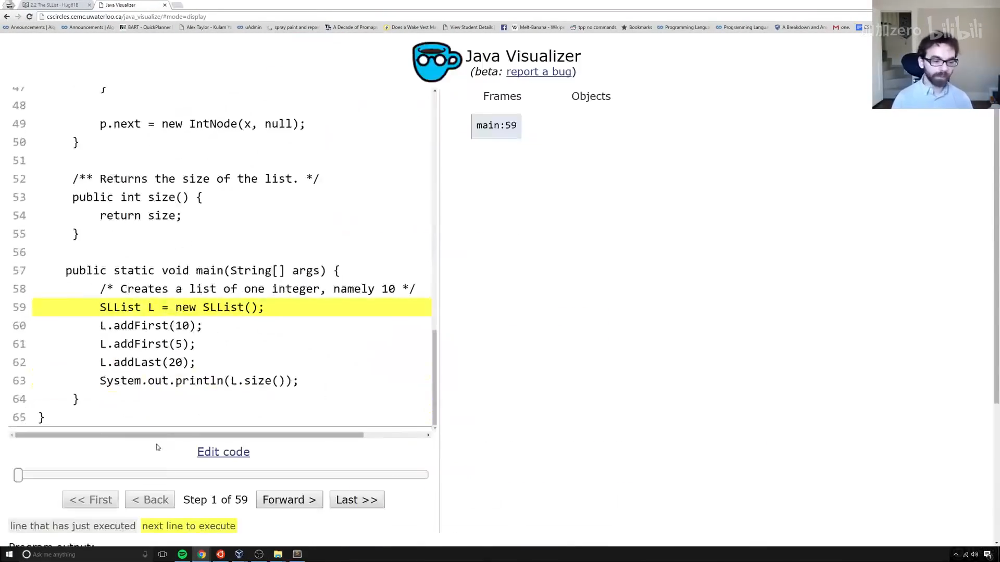
📷 空列表可视化
回到原视频 (00:33:50)
最直接的修法是加一个特殊情况：
public void addLast(int x) {
size += 1;
if (first == null) {
first = new IntNode(x, null);
return;
}
IntNode p = first;
while (p.next != null) p = p.next;
p.next = new IntNode(x, null);
}
它有效，但"有特殊情况的代码很难推理"——人类工作记忆有限。链表这种简单结构特殊情况还少，换成树等复杂结构，特殊情况会爆炸式增长。我们要追求一个一致的故事。
哨兵节点（Sentinel Node）
更优雅的解法：让所有 SLList 都"长得一样"，即使是空的。做法是永远放一个哨兵节点（一个值无所谓的虚拟节点）在开头：
- 空列表：
sentinel.next == null - 含 5、10、15 的列表：
sentinel → 5 → 10 → 15
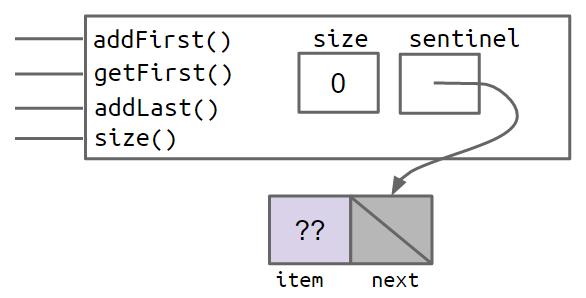
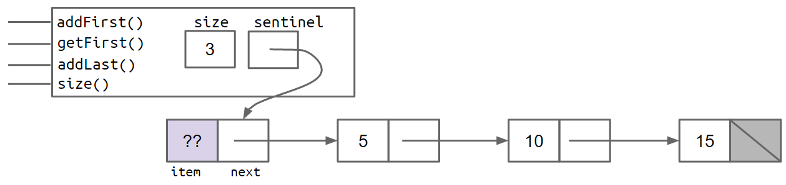
（图中淡紫色的 ?? 表示我们不在乎哨兵的值，随便填个 -518273 或 63 都行。）
于是 addLast 里那坨特殊情况代码被整个删掉：
public void addLast(int x) {
size += 1;
IntNode p = sentinel;
while (p.next != null) p = p.next;
p.next = new IntNode(x, null);
}
关键改动：first 变量重命名为 sentinel，它永远指向哨兵节点、永远不为 null；真正的前端项（若存在）在 sentinel.next.item。
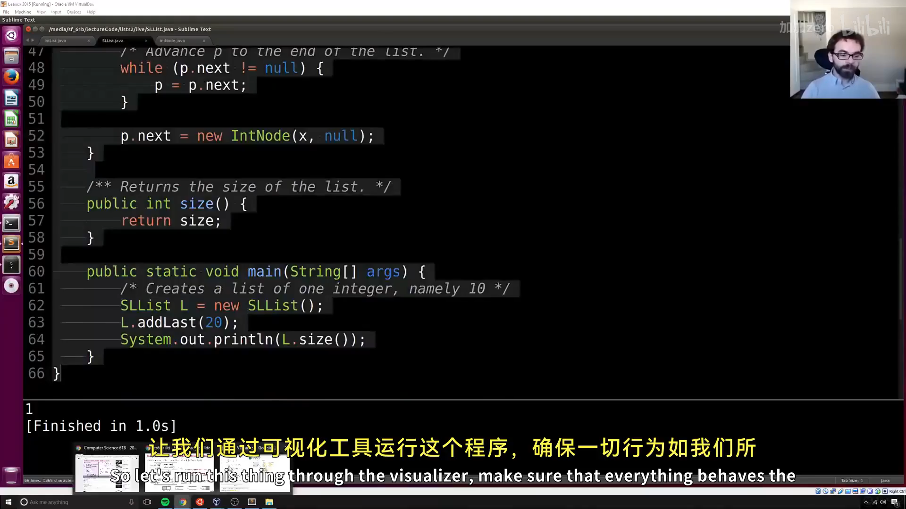
📷 哨兵节点的可视化
回到原视频 (00:42:26)
注意几个易错点（Josh 在课上现场演示过）：
addFirst不能写sentinel = new IntNode(x, sentinel)（这会重新分配哨兵），而应写sentinel.next = new IntNode(x, sentinel.next)——让新人插到队伍前面；getFirst要返回sentinel.next.item，不是sentinel.item——哨兵是"忠实伙伴"，它的意见永远不该被询问。
八、不变量（Invariants）
不变量是"只要你的代码没有 bug，就保证为真的、关于数据结构的事实"。带哨兵节点的 SLList 至少有这些不变量：
sentinel引用总是指向一个哨兵节点；- 前端项（若存在）总是位于
sentinel.next.item； size变量总是等于已添加的元素总数。
不变量有两个用处：
- 方便推理：写
addLast时，你知道sentinel永远非空，就不用担心空值； - 作为检查清单：方法跑完后，所有不变量都应重新成立——把它们写在纸上（或写成代码注释），能帮你避免 bug。
小结
本讲把上一讲的 IntList 一步步改造成 SLList：重塑品牌 → 加中间人 → private 隐藏细节 → 嵌套类整理组织 → 缓存加速 size → 哨兵节点消除特殊情况 → 用不变量约束结构。SLList 相比裸递归列表的优势：用户看不到内部节点、更易用、addFirst 更高效、能避免误用、size 更快，还能自然表示空列表。
下一讲将解决 SLList 的两个遗留限制（只能存整数、addLast 仍较慢），并引入基于数组的列表实现。
附：官方参考与延伸阅读
- 本讲讲义（The SLList）：https://joshhug.gitbooks.io/hug61b/content/chap2/chap22.html
- 上一讲讲义（Mystery of the Walrus）：https://joshhug.gitbooks.io/hug61b/content/chap2/chap21.html
- 嵌套类官方文档（Oracle）：https://docs.oracle.com/javase/tutorial/java/javaOO/nested.html
- 重载方法官方文档（Oracle）：https://docs.oracle.com/javase/tutorial/java/javaOO/methods.html
- 练习 2.2.2（Government.java，静态嵌套类）：见讲义 exercises 目录
- addLast / size 起始代码：https://github.com/Berkeley-CS61B/lectureCode/blob/master/lists2/DIY/addLastAndSize/SLList.java
- fixAddLast 起始代码：https://github.com/Berkeley-CS61B/lectureCode/blob/master/lists2/DIY/fixAddLast/SLList.java
版权与许可：本电子书中的课堂讲解内容重构自 Josh Hug（UC Berkeley）CS61B 课程录像；课程全部材料依据 Creative Commons 4.0 BY-NC-SA 许可发布。请在使用时署名 Josh Hug、以相同许可共享，且不得用于商业用途。书中示意图来自官方讲义原图，演示过程截图来自原视频，相应权利归原作者与视频权利人所有。